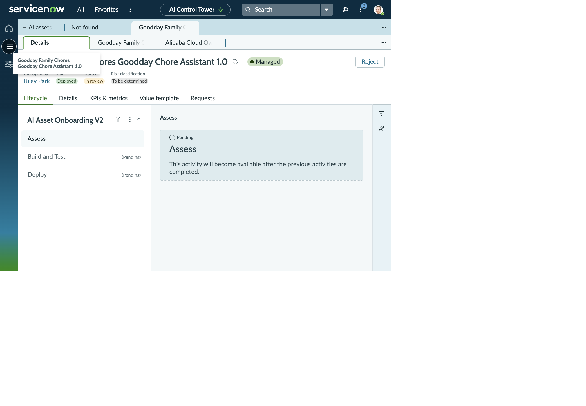
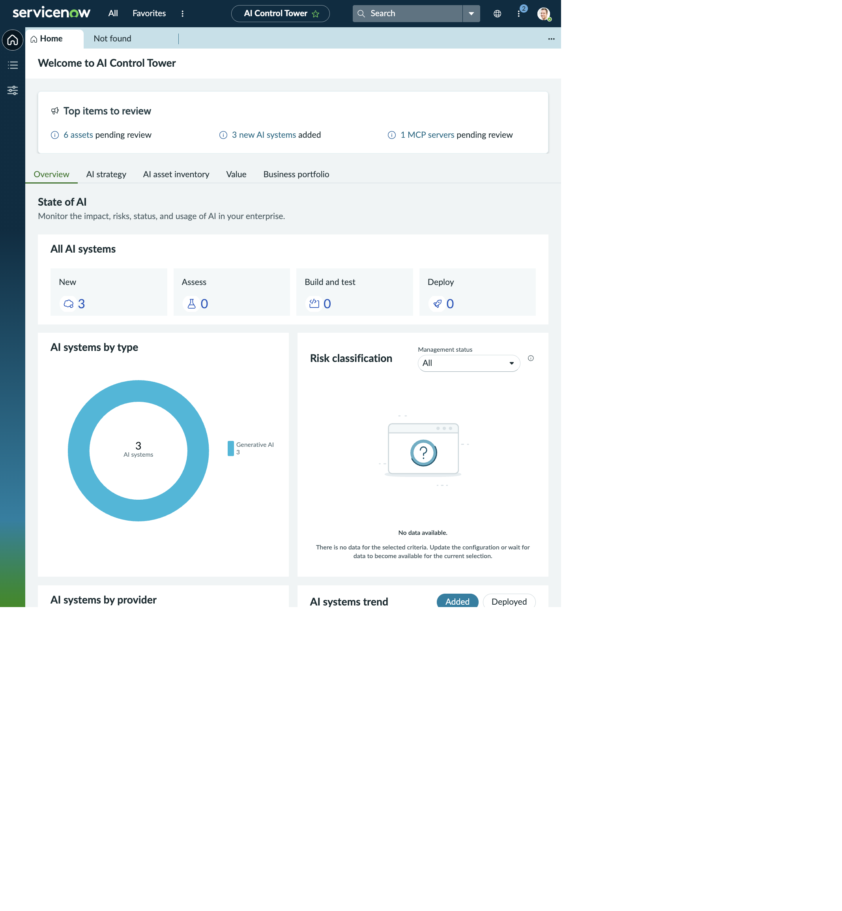
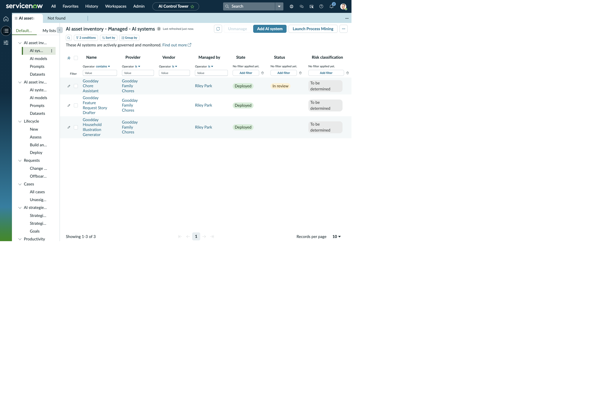
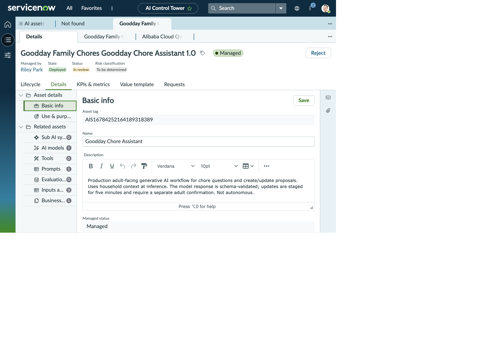
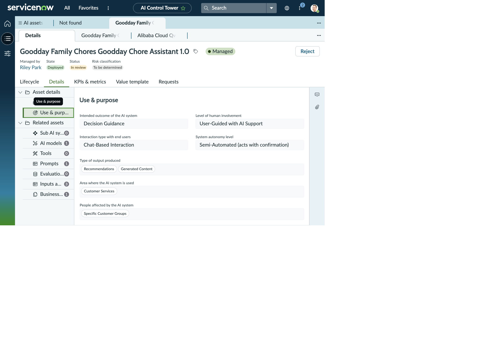
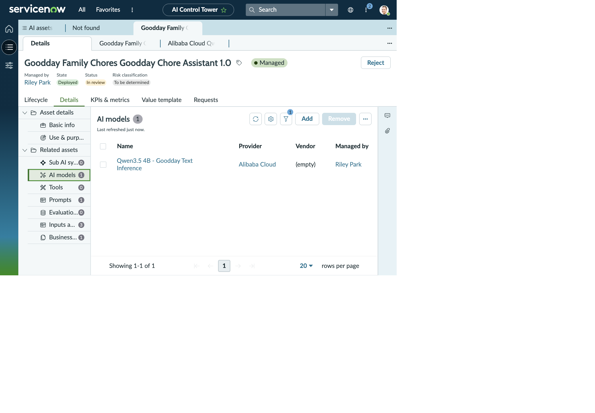
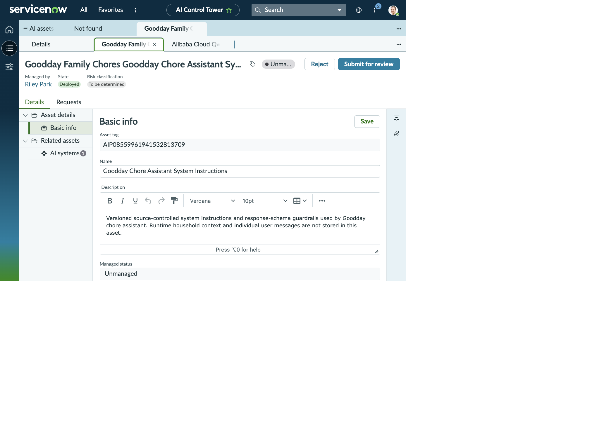
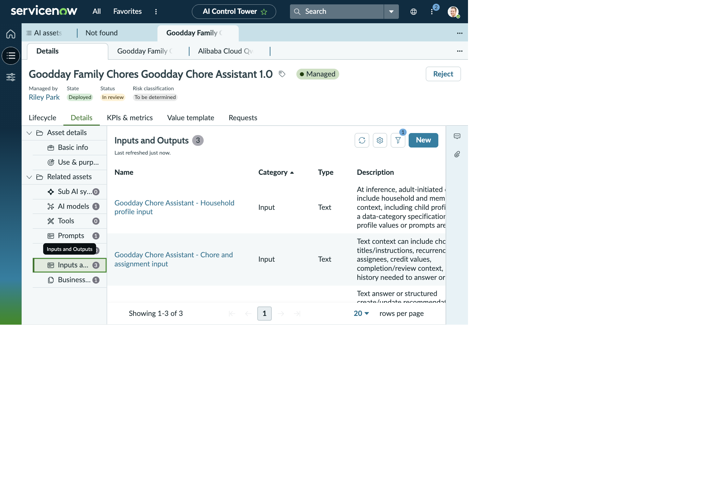
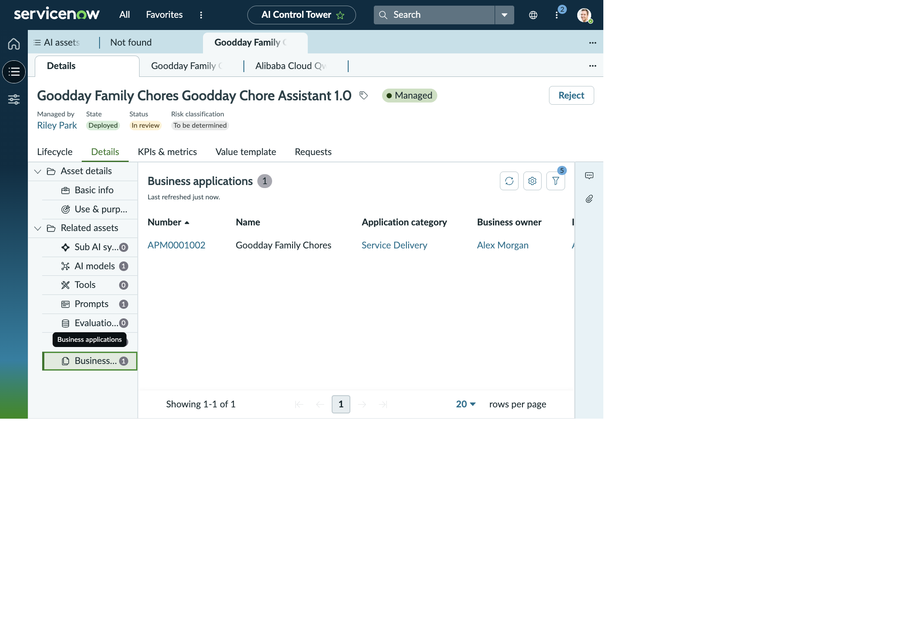

ARTIFICIAL INTELLIGENCE CONTROL TOWER · MANAGED SYSTEM
Goodday Chore Assistant
Explore the system record, its linked model and prompt, the information it works with, and its governance details as shown in the workspace.
WORKSPACE SNAPSHOT
Goodday Chore Assistant, in its workspace
The opening view brings the system, its lifecycle stage, and its governance status into one place.

BASIC INFORMATION
artificial intelligence system asset
- Asset tag
- AIS16784252164189318389
- Artificial intelligence system
- Goodday Chore Assistant
- Asset display name
- Goodday Family Chores Goodday Chore Assistant 1.0
- Asset type
- Generative artificial intelligence
- Version
- 1.0
- Description
- Production adult-facing generative artificial intelligence workflow for chore questions and create or update proposals. Uses household context. The model response is checked against a schema; updates are staged for five minutes and require a separate adult confirmation. Not autonomous.
- Business application
- Goodday Family Chores
- Provider
- Goodday Family Chores
- Managed by
- Riley Park
- Asset state
- Deployed
- Managed status
- Managed
- Artificial intelligence model asset
- Alibaba Cloud Qwen3.5 4B - Goodday Text Inference
- Model tag
- qwen3.5:4b
- Product model
- Goodday Family Chores Goodday Chore Assistant 1.0
- Prompt asset
- Goodday Family Chores Goodday Chore Assistant System Instructions 1.0
- Vendor
- (empty)
- Department
- (empty)
- License details
- (empty)
- Supported locations
- (empty)
- Source system
- (empty)
- Playbook phase
- New
- Created
- 2026-10-15 01:22:14
- Updated
- 2026-10-19 02:24:39
ARTIFICIAL INTELLIGENCE ASSET GOVERNANCE DETAILS
Lifecycle and risk fields
- Lifecycle phase
- New
- Lifecycle status
- Artificial intelligence steward review
- Risk classification
- To be determined
- Inherent risk rating
- (empty)
- Managed status
- Managed
- Deployed timestamp
- 2026-10-15 01:22:14
LINKED ARTIFICIAL INTELLIGENCE MODEL
Qwen3.5 4B - Goodday Text Inference
- Model name
- Qwen3.5 4B - Goodday Text Inference
- Model version
- qwen3.5:4b
- Description
- Upstream model used for adult chore-assistant chat and proposals; Goodday does not train or fine-tune it.
- Provider
- Alibaba Cloud
- Asset type
- Artificial intelligence model
- Base model
- (empty)
- Managed by
- Riley Park
- State
- Deployed
- Managed status
- Managed
- Risk classification
- To be determined
- Vendor
- (empty)
- Department
- (empty)
- License details
- (empty)
- Supported locations
- (empty)
- Source system
- (empty)
- Playbook phase
- New
- Related systems
- 2
- Training datasets
- 0
- Evaluation datasets
- 0
LINKED BUSINESS APPLICATION
Goodday Family Chores
- Application category
- Service Delivery
- Business owner
- Alex Morgan
- IT application owner
- Alex Morgan
- Status
- In Production
LINKED ARTIFICIAL INTELLIGENCE PROMPT ASSET
Chore Assistant System Instructions 1.0
- Display name
- Goodday Family Chores Goodday Chore Assistant System Instructions 1.0
- Asset type
- Artificial intelligence prompt
- State
- Deployed
- Managed by
- Riley Park
- Description
- Versioned system instructions and response-structure guardrails used by Goodday Chore Assistant. Runtime household context and individual user messages are not stored in this asset.
- Provider
- Goodday Family Chores
- Artificial intelligence model
- Alibaba Cloud Qwen3.5 4B - Goodday Text Inference qwen3.5:4b
- Related artificial intelligence systems
- 1
- Managed status
- Unmanaged
- Risk classification
- To be determined
- Lifecycle status
- (empty)
- Created
- 2026-10-15 01:21:58
- Updated
- 2026-10-15 01:22:03
INFORMATION OBJECTS
Context, transient exchanges, and audit metadata
| Information Object | Owner | Description captured in the record | Data classification |
|---|---|---|---|
| Chores, Reviews and Rewards | Alex Morgan | Chore definitions, assignments, completion notes, adult decisions, credits, rewards and exchanges. | (empty) |
| Artificial Intelligence Prompt and Generation Exchanges | (empty) | Prompts, request context and transient generated text/image results, including structured issue/feature story drafts. Sensitive prompt/output content is not retained in artificial-intelligence-use audit metadata. | (empty) |
| Artificial Intelligence Use and Governance Metadata | Alex Morgan | Local artificial-intelligence-use event metadata, model and provider labels, input data categories, and human-review outcomes. Prompt and output content are tracked separately. | (empty) |
DETAILS TAB · INPUTS AND OUTPUTS
Information used and produced by the assistant
| Name | Category | Type | Description | Information Object |
|---|---|---|---|---|
| Goodday Chore Assistant - Household profile input | Input | Text | Adult-initiated chat may include household and member profile context, including child profiles. This defines a data category; no live profile values or prompts are stored here. | Household Member Profiles |
| Goodday Chore Assistant - Chore and assignment input | Input | Text | Context can include chore titles and instructions, recurrence, assignees, credit values, completion and review context, and chat history needed to answer or prepare a proposal. This describes data categories, not live content. | Chores, Reviews and Rewards |
| Goodday Chore Assistant - Answer and proposal output | Output | Text | An answer or structured create/update recommendation. Any household record change requires adult confirmation; no independent or unattended write is represented. | Chores, Reviews and Rewards |
USE AND PURPOSE
Household chore assistance with adult approval
SUCCESS MEASURES
Evaluation evidence
The evaluation metrics report says no independent Goodday-specific model evaluation report is recorded. Risk and use-case review and formal evaluation evidence remain follow-up items.
VALUE TEMPLATE
Third Party Default Template
- Persona
- Other
- Department
- (empty)
- Category
- Productivity
- Usage measure
- EnterpriseAgents.InvocationCount.Daily
- Time per use
- 15 minutes
- Acceptance
- 50%
- Productivity gained
- 0 minutes
- Value view
- Last 30 days; no score
REQUESTS
One onboarding request
- Asset in review
- Goodday Family Chores Goodday Chore Assistant 1.0
- Asset type
- Generative artificial intelligence
- Managed by
- Riley Park
- State
- In progress
- Created
- 2026-10-20 02:14:31
- Change requests
- 0
- Offboarding requests
- 0
A WALK THROUGH THE WORKSPACE
See the Chore Assistant in context
These workspace views show the Artificial Intelligence Control Tower, the system record, and its linked information. The readable details above preserve every field and relationship.







